9 · Triplet Recognition
GraSP · Robot-assisted radical prostatectomy (RARP)
Each triplet consists of an instrument, an action, and a target. This guideline contains 6 instrument labels, 12 action labels, 18 target labels, and 156 triplets.
Instrument Label Space
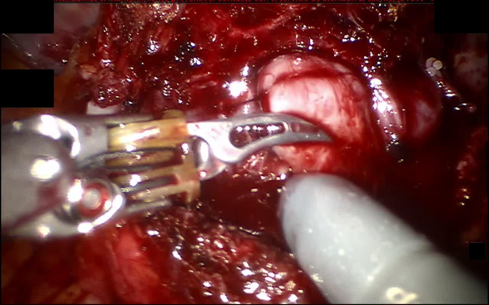
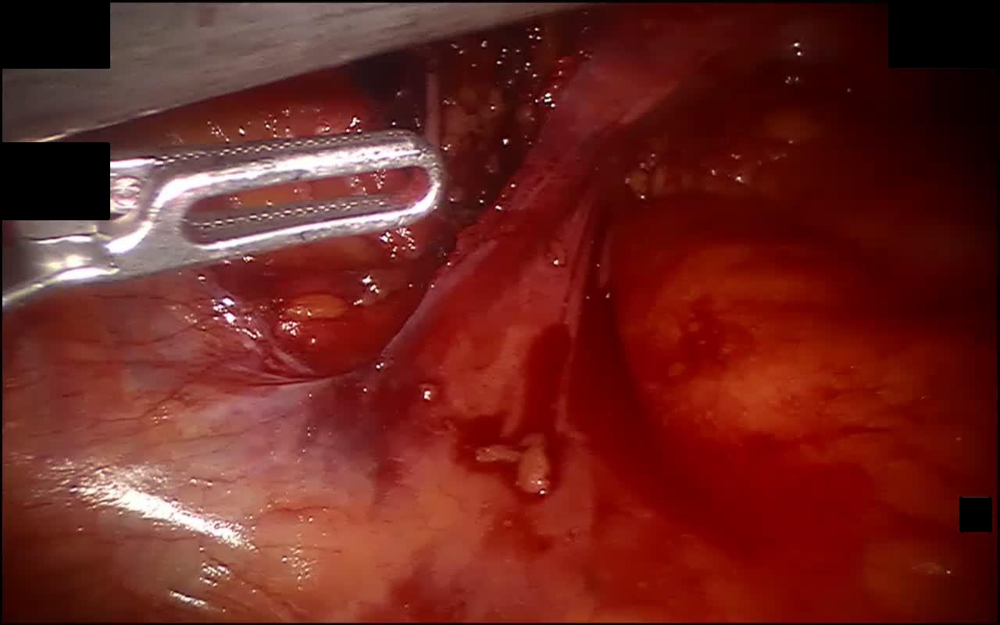
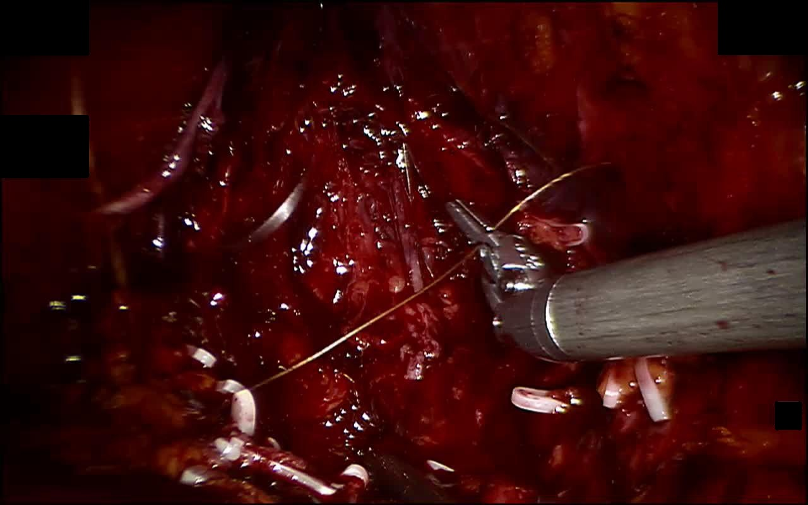
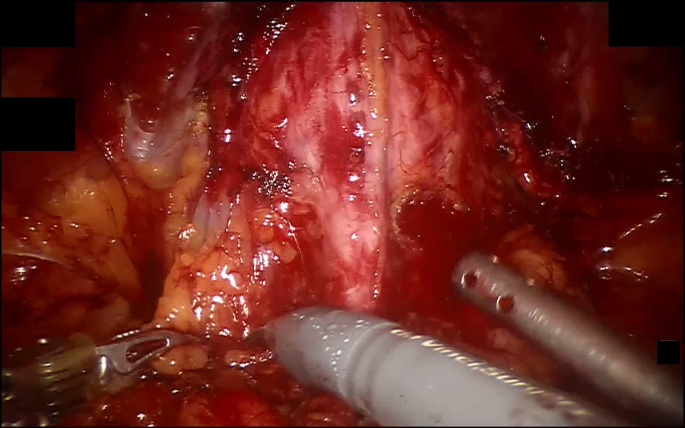
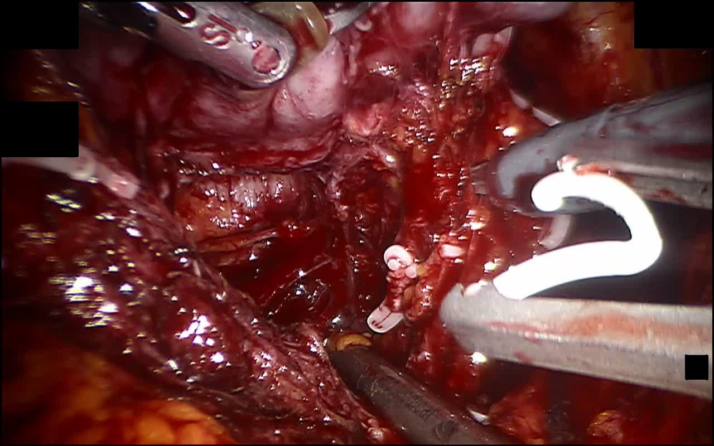
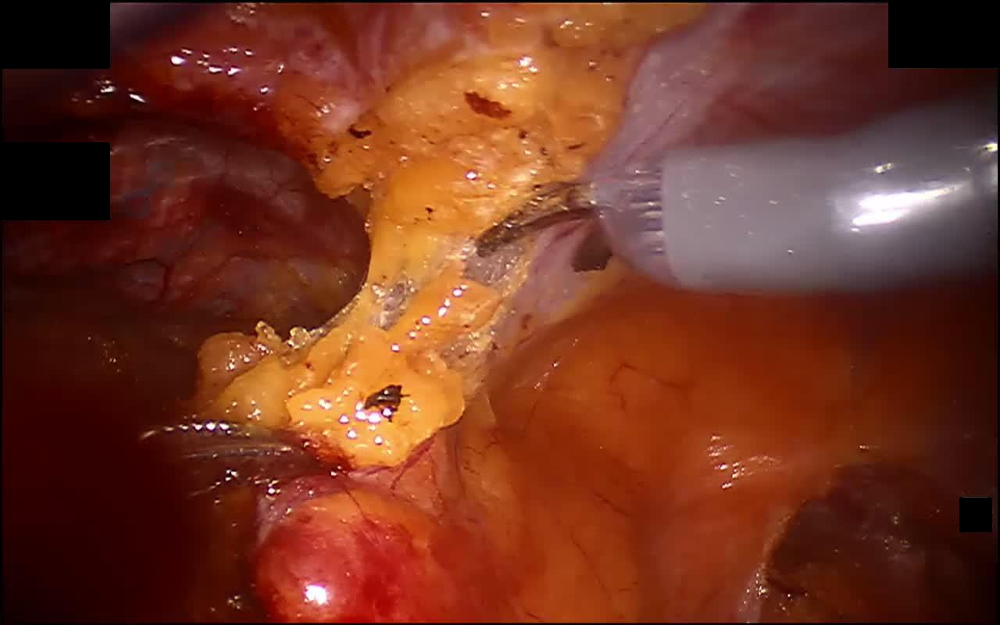
Action Label Space
- Packaging
- Tissue Retraction
- Dissection
- Aspiration
- Coagulation
- Needle Grasping
- Needle Puncture
- Suture Pulling
- Knot-tying
- Cutting
- Clipping
- Non-verb
Target Label Space
Note: Superior and inferior in this document refer to the surgical view, not the patient’s anatomical position.
1. Subperitoneal adipose tissue
It may contain lymph nodes. Lymph node-bearing adipose tissue shall be dissected, placed into a retrieval bag, and removed from the body.
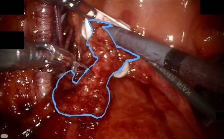
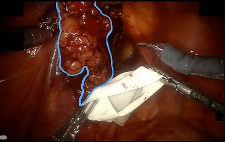
This tissue is most abundant when clearing both sides of the prostate and performing bilateral pelvic lymph node dissection.
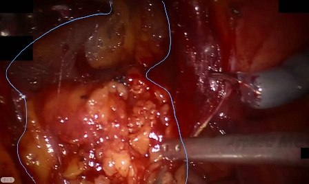
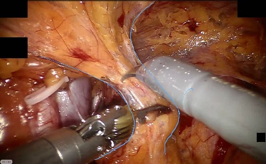
2. Prostate
The prostate is located inferior to the bladder and anterior to the rectum. Its base is continuous with the bladder neck, while the apex is adjacent to the dorsal venous complex and urethra. Posteriorly, it is separated from the rectum by Denonvilliers' fascia. During surgery, the surrounding tissues and vascular pedicles are dissected before prostate removal.
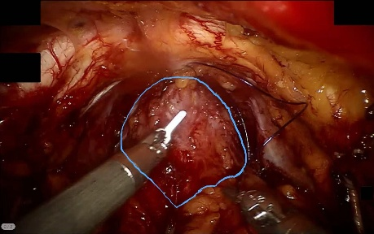
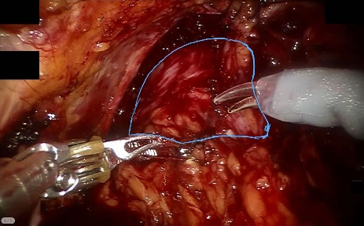
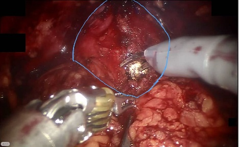
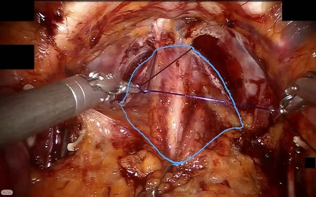
3. Lateral Prostatic Ligament
The lateral prostatic ligament is a fibrous structure located along the lateral aspect of the prostate. It is closely associated with the prostatic vascular pedicle and neurovascular structures. During prostate dissection, it is carefully exposed and divided. Clipping or coagulation may be used to control bleeding.
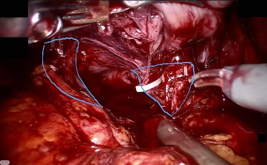
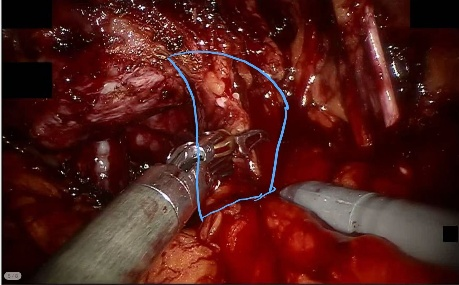
4. Seminal vesicle
Connected to the vas deferens, this glandular dilated structure serves as a landmark for identifying Denonvilliers’ fascia.
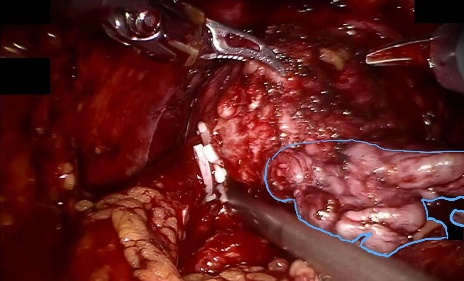
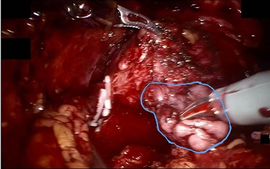
The suction instrument is inserted in most cases to obtain a better surgical view.
5. Dorsal venous complex
Located at the prostatic apex, the apical tip of the triangular pyramidal prostate, this structure is enveloped by abundant connective tissue and blood vessels. The urethra lies posteriorly, and ligation is performed while avoiding the urethra.
Moderate suture ligation is performed to control bleeding during dissection.
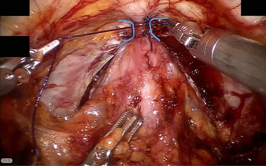
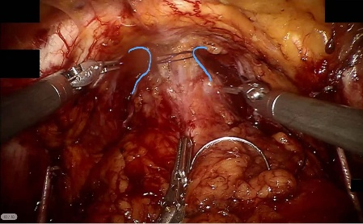
6. Vas deferens
It is continuous with the seminal vesicle, thicker than ordinary blood vessels, and pale in color.
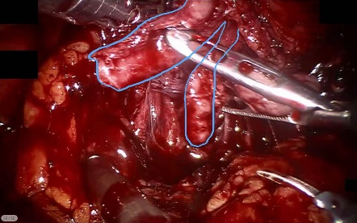
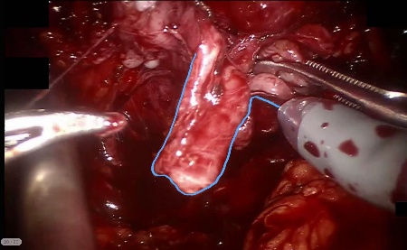
Gentle superior traction on this structure improves visualization for dissection of the Denonvilliers’ fascia and prevents rectal injury.
7. Peritoneum
It is a thin, membranous connective tissue covering the adipose tissue on the abdominal cavity surface.
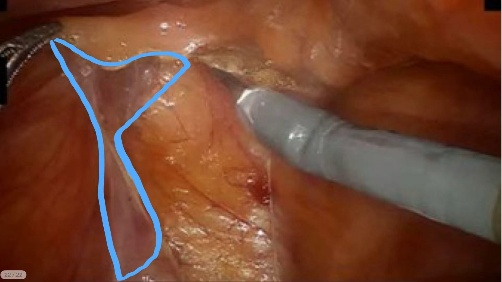
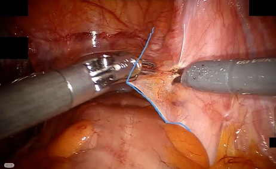
8. Obturator nerve
Located inferolaterally to the external iliac artery, the obturator nerve is white and clearly visible. It comes into view during dissection of the left and right sides of the prostate and is generally kept untouched.
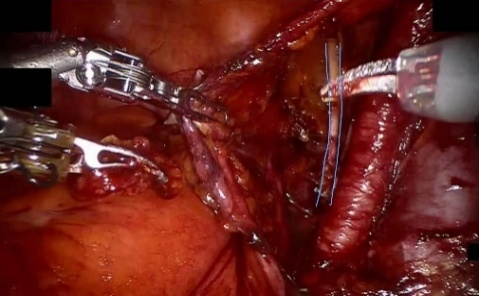
9. Bladder neck
The bladder neck is located at the inferior outlet of the bladder and is continuous with the proximal urethra. It is separated from the prostate during dissection. After prostate removal, it is preserved or reconstructed as needed. It is then anastomosed to the urethral stump.
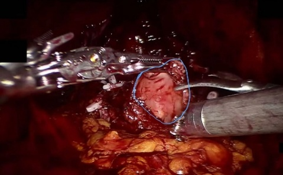
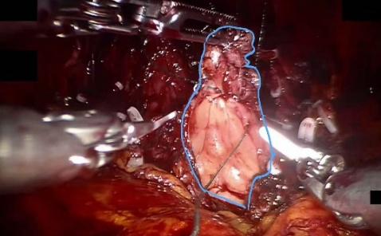
It is lifted upward,and the bladder neck is then narrowed with suture to match the urethral caliber.
10. Urethra
The urethra extends from the bladder neck and passes through the prostate. Near the prostatic apex, it lies posterior to the dorsal venous complex. The urethral catheter helps identify it during dissection. After prostate removal, the urethral stump is connected to the bladder neck.
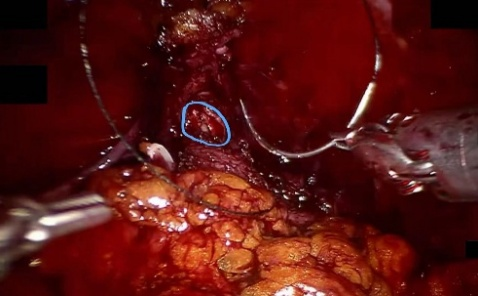
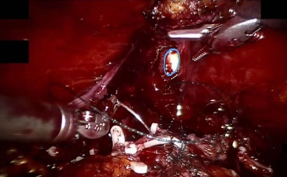
11. Vesicoprostatic space
It lies between the bladder and the prostate. Few clips are used at this stage, prior to the elevation of the vas deferens and seminal vesicles.
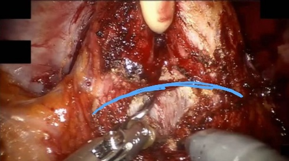
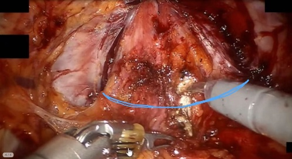
12. Rectum
The rectum is located posterior to the prostate and is separated from the prostate by Denonvilliers' fascia. During prostate dissection, this fascial plane is carefully developed to avoid rectal injury.
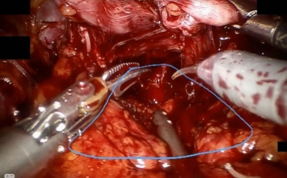
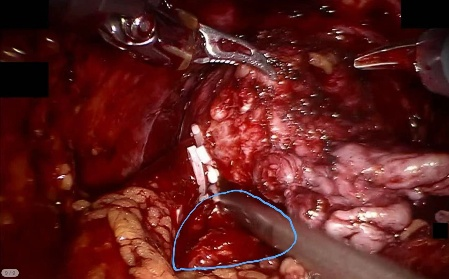
13. Denonvilliers’ fascia
It lies between the prostate and the rectum and appears whitish. Prostatic lateral ligamentts are present on both sides, and it only becomes exposed after the vas deferens and seminal vesicles are mobilized.
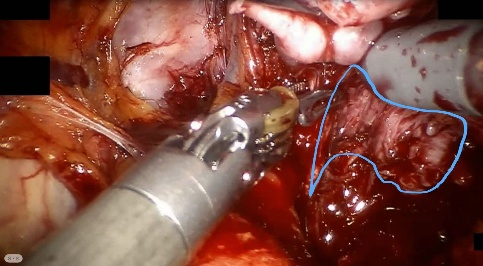
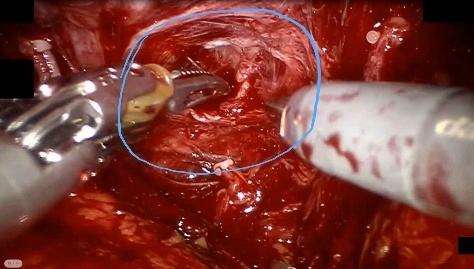
14. Below the pubic symphysis
On the anterior side of the dorsal venous complex, a suture is passed through to improve postoperative urinary continence.
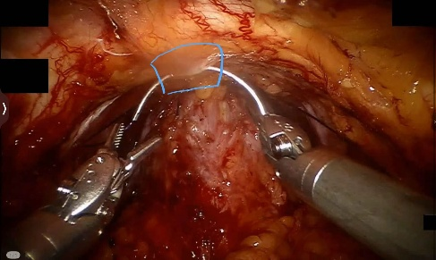
15. External iliac vessels
The collective term for the external iliac artery and external iliac vein is the external iliac vessels. Their surface is covered with abundant adipose tissue, within which diffuse lymphoid tissue is present.
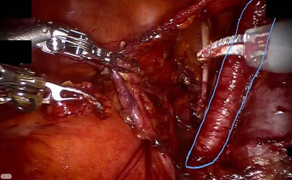
16. Suture
After ligation of the dorsal venous complex, excess suture is cut and removed.
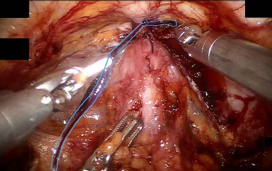
Sutures are used in only a limited number of steps throughout the procedure,and most suture manipulations are confined to the same anatomical region.
17. Urethral Catheter
The urethral catheter serves as a prominent landmark for identifying the urethra in the final stage of dissection.
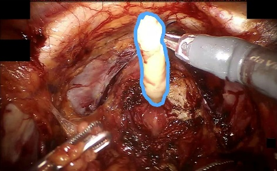
18. Non-target
Triplets (156 entries)
| No. | Instrument | Action | Target |
|---|---|---|---|
| 1 | Bipolar Forceps | Coagulation | Bladder neck |
| 2 | Bipolar Forceps | Coagulation | Denonvilliers’ fascia |
| 3 | Bipolar Forceps | Coagulation | Dorsal venous complex |
| 4 | Bipolar Forceps | Coagulation | Lateral prostatic ligament |
| 5 | Bipolar Forceps | Coagulation | Peritoneum |
| 6 | Bipolar Forceps | Coagulation | Prostate |
| 7 | Bipolar Forceps | Coagulation | Seminal vesicle |
| 8 | Bipolar Forceps | Coagulation | Subperitoneal adipose tissue |
| 9 | Bipolar Forceps | Coagulation | Vas deferens |
| 10 | Bipolar Forceps | Coagulation | Vesicoprostatic space |
| 11 | Bipolar Forceps | Dissection | Denonvilliers’ fascia |
| 12 | Bipolar Forceps | Dissection | Lateral prostatic ligament |
| 13 | Bipolar Forceps | Dissection | Peritoneum |
| 14 | Bipolar Forceps | Dissection | Prostate |
| 15 | Bipolar Forceps | Dissection | Seminal vesicle |
| 16 | Bipolar Forceps | Dissection | Subperitoneal adipose tissue |
| 17 | Bipolar Forceps | Dissection | Vesicoprostatic space |
| 18 | Bipolar Forceps | Non-verb | Non-target |
| 19 | Bipolar Forceps | Non-verb | Obturator nerve |
| 20 | Bipolar Forceps | Packaging | Subperitoneal adipose tissue |
| 21 | Bipolar Forceps | Suture Pulling | Prostate |
| 22 | Bipolar Forceps | Suture Pulling | Suture |
| 23 | Bipolar Forceps | Tissue Retraction | Bladder neck |
| 24 | Bipolar Forceps | Tissue Retraction | Denonvilliers’ fascia |
| 25 | Bipolar Forceps | Tissue Retraction | Dorsal venous complex |
| 26 | Bipolar Forceps | Tissue Retraction | External iliac vessels |
| 27 | Bipolar Forceps | Tissue Retraction | Lateral prostatic ligament |
| 28 | Bipolar Forceps | Tissue Retraction | Non-target |
| 29 | Bipolar Forceps | Tissue Retraction | Obturator nerve |
| 30 | Bipolar Forceps | Tissue Retraction | Peritoneum |
| 31 | Bipolar Forceps | Tissue Retraction | Prostate |
| 32 | Bipolar Forceps | Tissue Retraction | Rectum |
| 33 | Bipolar Forceps | Tissue Retraction | Seminal vesicle |
| 34 | Bipolar Forceps | Tissue Retraction | Subperitoneal adipose tissue |
| 35 | Bipolar Forceps | Tissue Retraction | Suture |
| 36 | Bipolar Forceps | Tissue Retraction | Urethra |
| 37 | Bipolar Forceps | Tissue Retraction | Vas deferens |
| 38 | Bipolar Forceps | Tissue Retraction | Vesicoprostatic space |
| 39 | Clip Applier | Clipping | Lateral prostatic ligament |
| 40 | Clip Applier | Clipping | Non-target |
| 41 | Clip Applier | Clipping | Prostate |
| 42 | Clip Applier | Clipping | Subperitoneal adipose tissue |
| 43 | Clip Applier | Clipping | Suture |
| 44 | Clip Applier | Clipping | Vas deferens |
| 45 | Clip Applier | Non-verb | Non-target |
| 46 | Large Needle Driver | Needle Grasping | Bladder neck |
| 47 | Large Needle Driver | Needle Grasping | Subperitoneal adipose tissue |
| 48 | Large Needle Driver | Needle Puncture | Bladder neck |
| 49 | Large Needle Driver | Dissection | Denonvilliers’ fascia |
| 50 | Large Needle Driver | Knot-tying | Bladder neck |
| 51 | Large Needle Driver | Knot-tying | Dorsal venous complex |
| 52 | Large Needle Driver | Needle Grasping | Below the pubic symphysis |
| 53 | Large Needle Driver | Needle Grasping | Non-target |
| 54 | Large Needle Driver | Needle Puncture | Below the pubic symphysis |
| 55 | Large Needle Driver | Needle Puncture | Dorsal venous complex |
| 56 | Large Needle Driver | Needle Puncture | External iliac vessels |
| 57 | Large Needle Driver | Needle Puncture | Non-target |
| 58 | Large Needle Driver | Needle Puncture | Urethra |
| 59 | Large Needle Driver | Non-verb | Non-target |
| 60 | Large Needle Driver | Suture Pulling | Prostate |
| 61 | Large Needle Driver | Suture Pulling | Suture |
| 62 | Large Needle Driver | Tissue Retraction | Bladder neck |
| 63 | Large Needle Driver | Tissue Retraction | Dorsal venous complex |
| 64 | Large Needle Driver | Tissue Retraction | External iliac vessels |
| 65 | Large Needle Driver | Tissue Retraction | Lateral prostatic ligament |
| 66 | Large Needle Driver | Tissue Retraction | Prostate |
| 67 | Large Needle Driver | Tissue Retraction | Rectum |
| 68 | Large Needle Driver | Tissue Retraction | Subperitoneal adipose tissue |
| 69 | Large Needle Driver | Tissue Retraction | Suture |
| 70 | Large Needle Driver | Tissue Retraction | Urethra |
| 71 | Monopolar Curved Scissors | Dissection | Peritoneum |
| 72 | Monopolar Curved Scissors | Coagulation | Denonvilliers’ fascia |
| 73 | Monopolar Curved Scissors | Coagulation | Lateral prostatic ligament |
| 74 | Monopolar Curved Scissors | Coagulation | Seminal vesicle |
| 75 | Monopolar Curved Scissors | Coagulation | Vesicoprostatic space |
| 76 | Monopolar Curved Scissors | Cutting | Lateral prostatic ligament |
| 77 | Monopolar Curved Scissors | Cutting | Suture |
| 78 | Monopolar Curved Scissors | Cutting | Vesicoprostatic space |
| 79 | Monopolar Curved Scissors | Dissection | Bladder neck |
| 80 | Monopolar Curved Scissors | Dissection | Denonvilliers’ fascia |
| 81 | Monopolar Curved Scissors | Dissection | Dorsal venous complex |
| 82 | Monopolar Curved Scissors | Dissection | External iliac vessels |
| 83 | Monopolar Curved Scissors | Dissection | Lateral prostatic ligament |
| 84 | Monopolar Curved Scissors | Dissection | Prostate |
| 85 | Monopolar Curved Scissors | Dissection | Seminal vesicle |
| 86 | Monopolar Curved Scissors | Dissection | Subperitoneal adipose tissue |
| 87 | Monopolar Curved Scissors | Dissection | Urethra |
| 88 | Monopolar Curved Scissors | Dissection | Vas deferens |
| 89 | Monopolar Curved Scissors | Dissection | Vesicoprostatic space |
| 90 | Monopolar Curved Scissors | Needle Puncture | Non-target |
| 91 | Monopolar Curved Scissors | Non-verb | Non-target |
| 92 | Monopolar Curved Scissors | Non-verb | Obturator nerve |
| 93 | Monopolar Curved Scissors | Non-verb | Prostate |
| 94 | Monopolar Curved Scissors | Non-verb | Seminal vesicle |
| 95 | Monopolar Curved Scissors | Packaging | Prostate |
| 96 | Monopolar Curved Scissors | Packaging | Subperitoneal adipose tissue |
| 97 | Monopolar Curved Scissors | Suture Pulling | Subperitoneal adipose tissue |
| 98 | Monopolar Curved Scissors | Tissue Retraction | Bladder neck |
| 99 | Monopolar Curved Scissors | Tissue Retraction | Denonvilliers’ fascia |
| 100 | Monopolar Curved Scissors | Tissue Retraction | Dorsal venous complex |
| 101 | Monopolar Curved Scissors | Tissue Retraction | External iliac vessels |
| 102 | Monopolar Curved Scissors | Tissue Retraction | Lateral prostatic ligament |
| 103 | Monopolar Curved Scissors | Tissue Retraction | Obturator nerve |
| 104 | Monopolar Curved Scissors | Tissue Retraction | Peritoneum |
| 105 | Monopolar Curved Scissors | Tissue Retraction | Prostate |
| 106 | Monopolar Curved Scissors | Tissue Retraction | Rectum |
| 107 | Monopolar Curved Scissors | Tissue Retraction | Seminal vesicle |
| 108 | Monopolar Curved Scissors | Tissue Retraction | Subperitoneal adipose tissue |
| 109 | Monopolar Curved Scissors | Tissue Retraction | Urethra |
| 110 | Monopolar Curved Scissors | Tissue Retraction | Vas deferens |
| 111 | Monopolar Curved Scissors | Tissue Retraction | Vesicoprostatic space |
| 112 | Prograsp Forceps | Dissection | Prostate |
| 113 | Prograsp Forceps | Needle Puncture | Dorsal venous complex |
| 114 | Prograsp Forceps | Needle Puncture | Urethra |
| 115 | Prograsp Forceps | Non-verb | Non-target |
| 116 | Prograsp Forceps | Packaging | Prostate |
| 117 | Prograsp Forceps | Packaging | Subperitoneal adipose tissue |
| 118 | Prograsp Forceps | Suture Pulling | Suture |
| 119 | Prograsp Forceps | Tissue Retraction | Below the pubic symphysis |
| 120 | Prograsp Forceps | Tissue Retraction | Bladder neck |
| 121 | Prograsp Forceps | Tissue Retraction | Denonvilliers’ fascia |
| 122 | Prograsp Forceps | Tissue Retraction | External iliac vessels |
| 123 | Prograsp Forceps | Tissue Retraction | Lateral prostatic ligament |
| 124 | Prograsp Forceps | Tissue Retraction | Peritoneum |
| 125 | Prograsp Forceps | Tissue Retraction | Prostate |
| 126 | Prograsp Forceps | Tissue Retraction | Seminal vesicle |
| 127 | Prograsp Forceps | Tissue Retraction | Subperitoneal adipose tissue |
| 128 | Prograsp Forceps | Tissue Retraction | Urethral Catheter |
| 129 | Prograsp Forceps | Tissue Retraction | Vas deferens |
| 130 | Prograsp Forceps | Tissue Retraction | Vesicoprostatic space |
| 131 | Suction Instrument | Aspiration | Bladder neck |
| 132 | Suction Instrument | Aspiration | Denonvilliers’ fascia |
| 133 | Suction Instrument | Aspiration | External iliac vessels |
| 134 | Suction Instrument | Aspiration | Lateral prostatic ligament |
| 135 | Suction Instrument | Aspiration | Non-target |
| 136 | Suction Instrument | Aspiration | Peritoneum |
| 137 | Suction Instrument | Aspiration | Prostate |
| 138 | Suction Instrument | Aspiration | Rectum |
| 139 | Suction Instrument | Aspiration | Subperitoneal adipose tissue |
| 140 | Suction Instrument | Aspiration | Urethra |
| 141 | Suction Instrument | Aspiration | Vas deferens |
| 142 | Suction Instrument | Aspiration | Vesicoprostatic space |
| 143 | Suction Instrument | Non-verb | Non-target |
| 144 | Suction Instrument | Non-verb | Subperitoneal adipose tissue |
| 145 | Suction Instrument | Tissue Retraction | Bladder neck |
| 146 | Suction Instrument | Tissue Retraction | Denonvilliers’ fascia |
| 147 | Suction Instrument | Tissue Retraction | Dorsal venous complex |
| 148 | Suction Instrument | Tissue Retraction | External iliac vessels |
| 149 | Suction Instrument | Tissue Retraction | Lateral prostatic ligament |
| 150 | Suction Instrument | Tissue Retraction | Obturator nerve |
| 151 | Suction Instrument | Tissue Retraction | Peritoneum |
| 152 | Suction Instrument | Tissue Retraction | Prostate |
| 153 | Suction Instrument | Tissue Retraction | Rectum |
| 154 | Suction Instrument | Tissue Retraction | Seminal vesicle |
| 155 | Suction Instrument | Tissue Retraction | Subperitoneal adipose tissue |
| 156 | Suction Instrument | Tissue Retraction | Vas deferens |